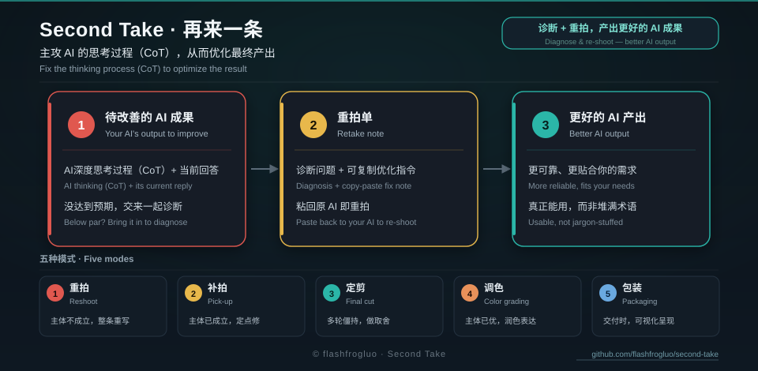

您在任意一个 AI（DeepSeek、ChatGPT、豆包、Gemini、即梦、Midjourney…）拿到一段不满意的结果，把那段推理（生成类就改读提示词）发给它，它会诊断错在哪，并产出一份可整段复制、粘回原对话的重拍单，让原 AI 直接给出更好的最终答案。
首轮或主体不成立，全量重写。
迭代轮次，只改点名处，沿用其余。
多轮僵持或版本冲突，做取舍裁决。
主体已完美，只做润色与风格强化。
达标后做可视化分析：总结 / 思维导图 / 图表。
npx skills add flashfrogluo/second-take或本地安装：bash install.sh；更新：bash update.sh。
完整中文说明见 README.md；英文手册见 guide-en.md；方法论真源见 references/思维链四标准.md。